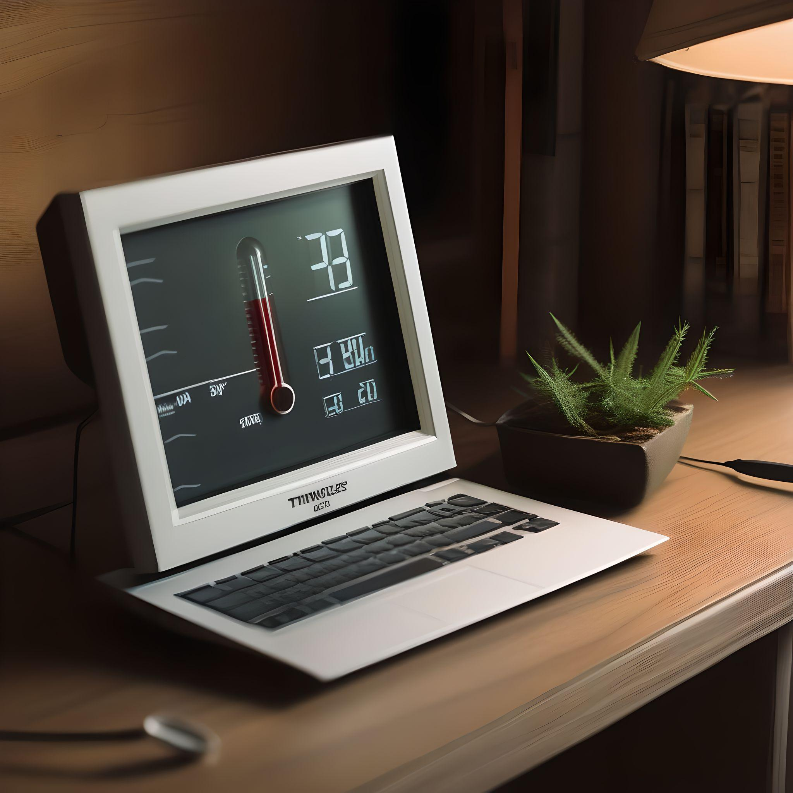

Tous les articles

Mon stage chez IMM Informatique
Mon stage chez IMM Informatique a été une expérience formatrice et intéressante, me permettant de découvrir une nouvelle facette de l’informatique. De l'organisation des locaux aux diverses missions confiées, en passant par les compétences acquises, ce stage m'a offert une véritable immersion dans le quotidien d’un technicien.

Service et relation client
Dans le domaine de l’informatique, le savoir-faire technique est indéniablement essentiel. Cependant, un autre aspect tout aussi crucial est souvent sous-estimé : le service et la relation client. Mon stage en entreprise m’a permis de découvrir à quel point une bonne communication et une gestion attentive des attentes des clients peuvent faire toute la différence.

Wordpress
Bien que l’entreprise IMM Informatique dans laquelle j’ai effectué mon stage se concentre sur la maintenance et la réparation de matériel informatique, j'ai eu l'opportunité d'utiliser WordPress, un outil essentiel pour le développement web, la communication et la gestion de la relation client.

Gestion des données
La gestion des données est un aspect essentiel de l’entretien et de la réparation des ordinateurs, surtout pour les clients professionnels dont l’activité dépend de ces données. Au cours de mon stage chez IMM Informatique, j’ai appris à quel point il est crucial de bien comprendre les différents types de stockage, de savoir comment migrer les données de manière efficace, et d'être capable de récupérer des données en cas de problème.

Sécurité en ligne
Durant mon stage chez IMM Informatique, un grand nombre d’intervention concernait des clients ayant des virus sur leur machine, j'ai donc appris à identifier les menaces les plus courantes et à conseiller les clients sur les meilleures pratiques pour sécuriser leur matériel.
Diagnostic et réparation d’ordinateurs
Lors de mon stage chez IMM Informatique, j’ai eu l'opportunité de plonger au cœur du processus qui permet de redonner vie à des machines en panne.